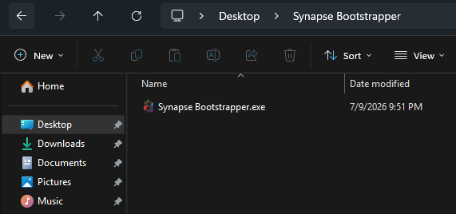
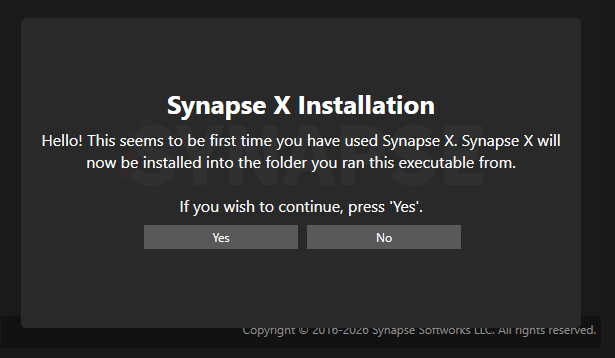
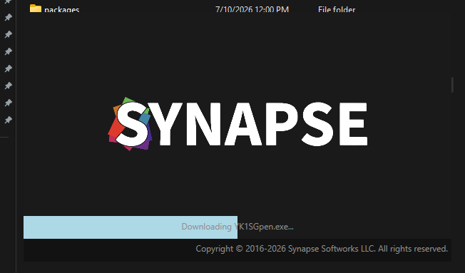
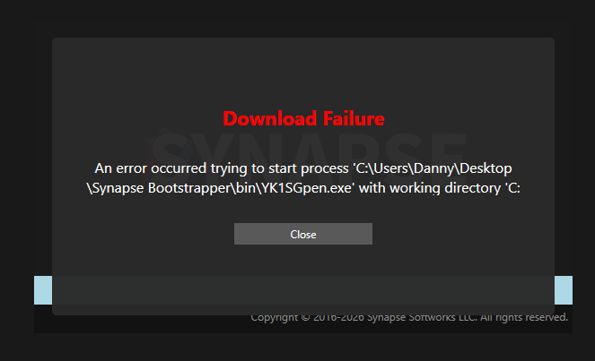

Getting Started
This guide walks you through installing and running Synapse from scratch. The whole process takes about a minute.
Prerequisites
- Windows 10 or 11 (64-bit). Synapse is Windows-only and does not run on Mac or Linux.
- An internet connection. The bootstrapper downloads the latest files each time a new version is released.
- A dedicated folder. Synapse installs into the folder you run it from, so give it its own empty folder (for example
C:\Synapse) rather than running it straight from your Downloads. - No .NET install needed. The bootstrapper is a single self-contained
.exe— there is nothing else to install first.
Installation
1. Download the bootstrapper
Head to the home page and click Download. This gives you a single file, Synapse Bootstrapper.exe.
2. Put it in its own folder
Create a folder where you want Synapse to live (such as C:\Synapse) and move the downloaded .exe into it. When you run the bootstrapper it creates several sub-folders next to itself, so keeping it in a dedicated folder keeps everything tidy.

3. Run it and confirm the install
Double-click Synapse Bootstrapper.exe. The first time you run it, Synapse detects it hasn't been set up yet and asks to install into the current folder. Click Yes to continue.
If Windows shows a “Windows protected your PC” prompt, click More info then Run anyway. You may not see it at all.

4. Let it download and launch
The bootstrapper creates its folders, downloads the latest files, and shows a progress bar as it works. When it reaches 100% it launches Synapse automatically — no extra clicks needed.

Everyday use & updates
After the first install, just run Synapse Bootstrapper.exe whenever you want to open Synapse. On each launch it checks for a new version:
- Up to date? It launches Synapse straight away.
- New version available? It downloads the update automatically, then launches. You never have to reinstall by hand.
Tip: right-click the bootstrapper and choose Send to → Desktop (create shortcut) so it's one click to open from then on.
Troubleshooting
“Download Failure” error
A Download Failure screen means something went wrong while downloading or starting Synapse. This is almost always caused by antivirus or firewall software — either blocking the download, or deleting the downloaded file before it can launch. If the message mentions it couldn't start a process such as bin\...exe, that's antivirus removing the file. Try the following:
- Add an exclusion for the whole Synapse folder in your antivirus — including Windows Security → Virus & threat protection → Exclusions — then run the bootstrapper again.
- Temporarily disable your VPN or firewall and try again.
- Make sure you have a working internet connection.

Still stuck?
Join our Discord and ask in the support channel — we're happy to help.